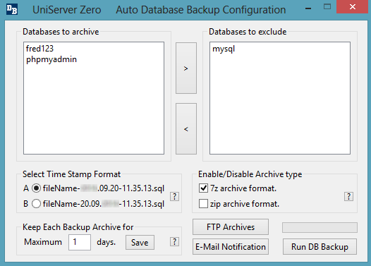
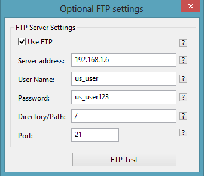
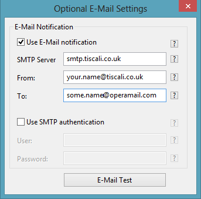

|
|
MySQL Auto DB Backup |
The Uniform Server module MySQL Auto DB Backup allows you to select MySQL databases to automatically backup. These backups are archived in either or both 7z and zip archive formats. Each archive is uniquely identified by adding a time stamp. You can select one of two predefined time stamp formats. In addition, you have options to FTP archives for external storage and provide e-mail notification. The e-mail notification is a simple page which includes the error log. Archives on a host PC are deleted after a pre-defined number of days, which is a selectable option.
Install module (plugin)
Install The Uniform Server MySQL Auto DB Backup plugin as follows:
- Download ZeroXIV_mysql_autoback_x_x_x.exe module (plugin).
- Copy ZeroXIV_mysql_autoback_x_x_x.exe module (plugin) to folder UniServerZ
- Double-click on the downloaded module; this starts the extraction process.
- If requested, allow overwriting of existing files.
- If you wish to save space, delete file ZeroXIV_mysql_autoback_x_x_x.exe
- Folder UniServerZ now contains two new files and one new folder:
◦ UniDbBackup.bat - Starts the MySQL Auto DB Backup user interface.
◦ ZeroXIV_mysql_autoback_x_x_x_read_me.txt - Contains additional information.
◦ db_auto_backup - Folder contains backups and log files.
- Folder UniServerZ\utils now contains three new files and one folder:
◦ start_task_schedule.bat - Shortcut to run Windows Task scheduler.
◦ UniDbBackup.exe - Uniform Server MySQL Auto DB Backup application.
◦ us_7za.exe - Third party application.
◦ UniDbBackupConfig - Folder for configuration and tracking.
- Folder UniServerZ\utils\UniDbBackupConfig - Configuration and tracking:
◦ us_db_backup_config.ini - Configuration file for MySQL Auto DB Backup.
◦ us_db_ref_list.txt - Tracking, full list of previous DBs (automatically created).
◦ us_db_to_exclude.txt - Tracking, DBs to exclude (automatically created).
Warning
The Uniform Server MySQL Auto DB Backup application and UniController are independent applications; this means there is no interaction between the two.
- Very important:
◦ If running from Task Scheduler, disable the UniServer_Auto_Backup task or ensure you make changes before the task is timed to run. - Databases added or deleted while running the UniServer Auto Backup user interface:
◦ To allow new change to be picked up, ensure you restart the UniServer Auto Backup user interface.
Application start up parameters
The MySQL Auto DB Backup application UniDbBackup.exe is started in one of two modes. These modes are selected by passing a parameter to it at start-up:
- No Parameter
◦ Starting the application with no parameters (for example, double-clicking on UniDbBackup.bat or UniDbBackup.exe) opens the user configuration window.
◦ The user configuration window allows you to configure the application and optionally run a database backup manually. - Parameter auto
◦ Starting the application with parameter set to auto (for example, using Task Scheduler) runs the application in background mode.
◦ Before running in this mode, ensure you have manually run the backup application to confirm correct configuration.
User configuration window
Start the application by double-clicking on file UniServerZ\UniMysqBackup.bat or UniServerZ\utils\UniDbBackup.exe. This opens the user interface window.
Note: If Databases to archive and Databases to exclude are blank, the MySQL server is not running. Start the MySQL server and restart this application.
|
 |
With the above configuration complete, you can click Run DB Backup. This will create archives as appropriate. These along with the log files are located in folder UniServerZ\db_auto_backup. If you have configured FTP and E-mail notification, they will have been executed during the backup process. For details, refer to appropriate sections below. Note: This manual backup method is fully portable.
Note 1: Preferably, use the 7z archive option; it has better compression.
Note 2: If the database is large, it will take a while to complete. Before closing the application, wait for the green progress bar to stop.
Background design notes:
Two files (us_db_ref_list.txt and us_db_to_exclude.txt) are automatically generated. They track the previous and current state of databases contained in the MySQL (Mariadb) server.
If the files do not exist, they are created. us_db_ref_list.txt is populated with all current databases that are archievable and us_db_to_exclude.txt is created containing zero files.
A user assigns databases to exclude; these are saved to file us_db_ref_list.txt and the internal display lists. Databases to backup and exclude are updated.
Server databases added or deleted are detected next time Uniform Server Auto DB backup is run. The current list of databases is compared to those contained in file us_db_ref_list.txt. A difference signals a change. The file us_db_ref_list.txt is updated to contain the current list of databases. Any databases missing in file us_db_to_exclude.txt are deleted and the file updated. Both display lists are updated to reflect the new state.
FTP configuration
In the event of a local disk crash, a database backup created locally is of little use. Ideally, after creating a backup, copy it to another PC for safe retrieval at a later date. Uniform Server Auto DB Backup provides an option to FTP archives to another machine automatically. These archives are transferred as soon as they are created.
The following section assumes you have either an FTP account with a service provider or running an FTP server on another machine within your network. In either case, configuring the FTP options is similar as explained below:
Use FTP check-box:
Checked enables editing FTP parameters and informs the application to use FTP. Unchecked disables FTP and menu parameter editing.
|
 |
Configuration parameters are saved either when the FTP Test button is clicked or when the menu window is closed.
FTP Test button: This button allows you to test the FTP configuration. When clicked, two files (test_7z.txt and test_zip.txt) are created in folder db_auto_backup. These are FTP'ed to the FTP server and deleted. Confirm these files have been transferred to your FTP server and correct any errors, if any.
Note: Uniform Server provides FTP module ZeroXIV_filezilla_server_x_x_x. This is a portable version of the FileZilla server. However, if you wish, it can optionally be run as a service. It allows you to quickly set up an FTP server on another machine to provide external backups of your database archives. For details, see Portable FileZilla Server page.
E-Mail Notification configuration
For convenience, Uniform Server Auto DB Backup provides an option to E-mail a notification to a designated e-mail address. The E-Mail notification contains a time stamp in the subject title, along with the error log file content. This information will allow you to quickly decide if any action is required, should the backup fail.
Use E-Mail notification check-box:
Checked enables editing e-mail parameters and informs the application to use E-Mail notification. Unchecked disables E-Mail notification and menu parameter editing.
Use SMTP authentication check-box:
Checked enables editing authentication parameters and informs the application to use SMTP authentication. Unchecked disables SMTP authentication and menu parameter editing.
Generally, when using your service provider for e-mail, authentication is not necessary. However, if this is a requirement, enter details as follows:
|
 |
Configuration parameters are saved either when the E-Mail Test button is clicked or when the menu window is closed.
E-Mail Test button: This button allows you to test the E-Mail notification configuration. When clicked, an e-mail is sent to the e-mail address configured.
The e-mail sent will have a subject titled UniServer Auto DB Backup, followed by a time stamp.
Note: You can change the text UniServer Auto DB Backup by editing the configuration file us_db_backup_config.ini
The test e-mail contains the following content:
- This test E-Mail confirms UniServer Zero XIV E-Mail notification is correctly configured. (...)
Confirm you received the test e-mail.
Note: Some SMTP servers may not be compatible with the E-Mail Notification application.
Testing
Before proceeding to auto backup configuration, ensure backups are created and you can restore from these backups.
After configuring FTP and E-mail notification, perform a manual database backup by clicking Run DB Backup button. Ensure the following:
- Database archives are created in folder db_auto_backup.
- The database archive files have been FTP'ed to your FTP server.
- An e-mail notification was received by checking your e-mail.
- Finally and most importantly, use the backups to restore databases to confirm correct operation.
Auto DB backup configuration
Automatic backup is performed using an existing Windows service known as Task Scheduler. This provides a more consistent and reliable implementation and is compatible across all Windows versions. Note: using Task Scheduler, the servers are no longer portable because changes (entries) are made to the Windows registry.
The Uniform Server MySQL Auto DB Backup application is started with parameter auto, which runs the application in the background. This parameter is specified when configuring Task Scheduler. The following is a text summary of the steps required to configure Task scheduler. You may prefer a step-by step guide including images; see Create Scheduled Task page for details.
Note: Sections Delete a Task and Quick Test are included for completeness.
-------------
Create a Task
-------------
1) Start Task Scheduler:
Navigate to folder "C:\UniServerZ\utils" and double-click on "start_task_schedule.bat"
2) Task Scheduler:
a) Click "Create Basic Task" - Opens the "Create Task" window.
b) Enter a Name in the "Name" field. Use "UniServer_Auto_Backup", without the quotes.
c) Enter a Description in the "Description" field. Use "Uniform Server MySQL automatic backup", without the quotes.
d) Click "Next" button.
3) Create Basic Task Wizard - Task Trigger:
a) Select one of the options: "Daily", "Weekly" or "Monthly". For this example, select "Daily" for a daily backup.
b) Click "Next" button.
4) Create Basic Task Wizard - Daily:
a) Set the starting date and time.
b) Set "Recur every 1 days" - Makes backup every day.
c) Click "Next" button.
5) Create Basic Task Wizard - Action
a) Select "Action", click "Start a program" radio button.
b) Click "Next" button.
6) Create Basic Task Wizard - Start a Program
a) "Program/script": Click "Browse" button.
Navigate to application "UniDbBackup.exe"; for example, "C:\UniServerZ\utils\UniDbBackup.exe"
Click "Open" button.
b) Add arguments: Enter "auto", without the quotes.
c) Click "Next" button.
7) Create Basic Task Wizard - Summary
a) Check Box "Open the Properties dialog for this when I click Finish": Click to select.
b) Click "Finish" button. New task is created and added to Windows schedule.
8) UniServer_Auto_Backup Properties (Local Computer):
This displays task properties; shown for completeness.
a) Click "OK" button.
b) Click "File > Exit"
-------------
Delete a Task
-------------
To remove a task, start Task Scheduler, select task from the library list and delete.
The following details how to remove the Uniform Server "UniServer_Auto_Backup" task:
9) Task Scheduler: - Delete task:
a) Start Task Scheduler:
Navigate to folder "C:\UniServerZ\utils" and double-click on "start_task_schedule.bat"
b) Left menu: Select "Task Scheduler Library".
c) Center menu: Select "UniServer_Auto_Backup"; ensure it is highlighted.
d) Right menu: Click "Delete" menu item.
e) Pop-up displayed "Do you want to delete this task"; click "Yes" button.
f) Click "File > Exit"
----------
Quick Test
----------
For testing, there is no need to wait for the scheduled time. You can instantly run the Task as follows:
10) Task Scheduler: - Run task:
a) Start Task Scheduler:
Navigate to folder "C:\UniServerZ\utils" and double-click on "start_task_schedule.bat"
b) Left menu: Select "Task Scheduler Library".
c) Centre menu: Select "UniServer_Auto_Backup"; ensure it is highlighted.
d) Right menu: Click "Run" - Forces a run with the parameters set.
e) Click "File > Exit"